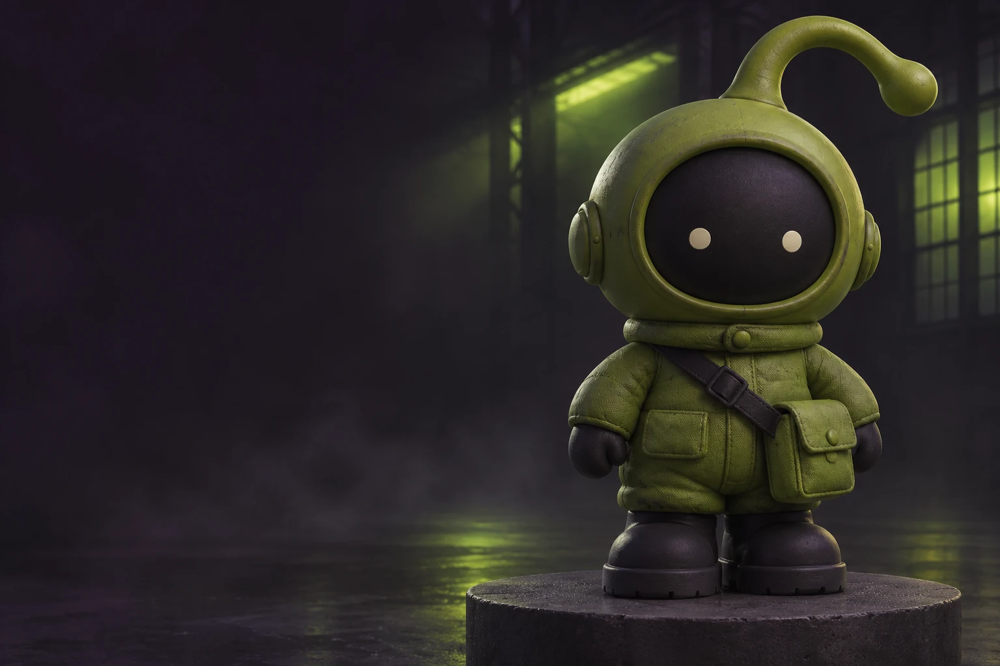
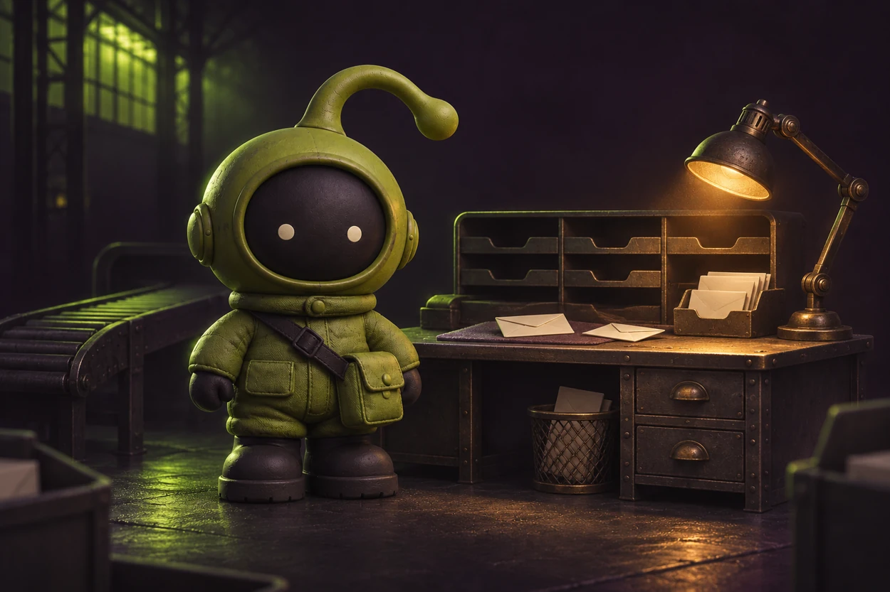

THE QUIET ONE
苔绿 MOSS
把安静，穿在身上。

MEET YOUR NIGHT COURIER
圆滚滚的身体，歪了一点的天线，一双走过很多路的大靴子。N-01 是夜班邮局的第一位配送员。斜挎包里没有快件，只有白天没能说完的心事。
THE COLOUR ARCHIVE
换一身制服，再出发。
点击配色，打开配送员档案。
把安静，穿在身上。
有些梦，晚一点醒也没关系。
留一盏灯，等你回来。
CONCEPT COLLECTION 当前为原创视觉概念展示，非在售商品。
FROM THE NIGHT SHIFT DESK
一封写给夜归人的信亲爱的，还没睡的你：
有些东西，只有到了晚上才敢拿出来。
一声迟到的谢谢，一点藏好的委屈，
还有一句反复删掉的「我想你」。
所以，我们开了一间夜班邮局。
不计算距离，不追问原因。
只把你心里的那一点重量，接过来。

SMALL DETAILS. BIG FEELINGS.
原创角色设计语言
ROUND BODY / QUIET SOUL
接收微小情绪，偶尔也接收月亮的消息。
不必有很多表情，也能安静地陪着你。
一双走得稳的脚，和一个装得下心事的包。
FIRST SHIFT / CONCEPT RELEASE
先选一个想陪伴你的颜色。
把它留在心愿袋，等下一次相见。
本页无真实下单、支付或预售功能。